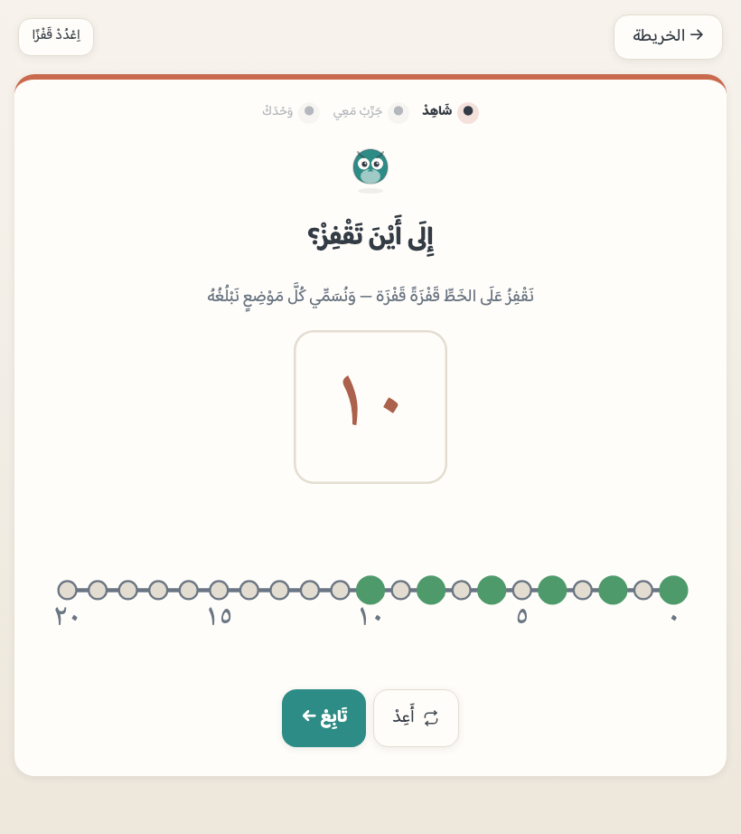

هدفُ المستوى الأول
أن يقدّر الكمياتِ فوراً، ويعدّ بتناظرٍ فرديّ، ويقرأ رموز ٠–٢٠، ويقارن ويرتّب، ويجمع ويطرح ضمن ٢٠ عبر العشرة، ويكمل الأنماط — فهماً لا حفظاً ببغائياً.
«اِحْسِبْ» ليس مجموعةَ ألعابٍ حسابية، بل مسارٌ واحد مبنيٌّ على تدرّجٍ محقَّق بحثياً. وهذه الصفحة تقول على ماذا بُني، ولماذا رُتّب هكذا، وما الذي قرّرناه صراحةً — وما الذي لا يفعله التطبيق.
المرجعُ المنهجيّ هو مسارات التعلّم في الرياضيات المبكرة (Learning Trajectories — Clements & Sarama): لكل مفهومٍ رياضيّ تدرّجٌ معلومٌ يمرّ به الطفل، مرتّبٌ بالبحث لا بترتيب كتابٍ مدرسيّ. فنحن نطوّع مساراً موثوقاً ولا نخترع بديلاً عنه، ونضع كل محطةٍ في موضعها من ذلك التدرّج.
أن يقدّر الكمياتِ فوراً، ويعدّ بتناظرٍ فرديّ، ويقرأ رموز ٠–٢٠، ويقارن ويرتّب، ويجمع ويطرح ضمن ٢٠ عبر العشرة، ويكمل الأنماط — فهماً لا حفظاً ببغائياً.
أوّلُ ثلثِ الرحلة لا يحتاج قراءةً إطلاقاً — كمياتٌ وأصواتٌ فقط. فالمدخل مفتوحٌ لسنّ الرابعة، وأهدافُ اللمس أكبر من المعتاد لأجل إصبعٍ أصغر.
المئةُ والمنازلُ والقيمةُ المكانية الكاملة موضوعُ «اِحْسِبْ ٢» — حدٌّ لا يُمدَّد ضمنياً. وما دون العشرين يُتقَن قبل أن يُجاوَز.
لا يُعرَض رمزُ عددٍ قبل أن يتقن الطفل كمَّه — تمييزاً ومقارنةً وعدّاً. الرمزُ تسميةٌ لمعروف لا تعريفٌ لمجهول، ولذلك يُكشَف فوق الكمية التي عدّها للتوّ.
كلُّ عددٍ يمرّ بثلاث بوابات بالترتيب: كمّاً (يميّزه ويقارنه بلا رمز) ← عدّاً (بتناظرٍ فرديّ) ← رمزاً (يقرؤه ويطابقه). ولا يدخل عمليةً عددٌ لم يعبر الثلاث. ويفرض ذلك برنامجُ فحصٍ آليّ لا ذوقُ مؤلّف.
تمييزُ ١–٣ ثم ٤–٥ بنظرةٍ واحدة أساسُ الحسّ العددي بحثياً، ويسبق العدَّ اللفظيّ في الرحلة. وأنماطُه أنماطُ النرد القياسية ثم توزيعاتٌ عشوائية — لئلا يُحفَظ شكلٌ بدل أن يُدرَك عدد.
التناظرُ الفرديّ · ثباتُ الترتيب · العدديّة (آخِرُ ما نطقتَ هو الجواب، ويُسأل «كم صارت كلُّها؟» بعد كل عدّ) · التجريد (كلُّ شيءٍ يُعَدّ) · ولا أهميةَ للترتيب (البعثرةُ لا تغيّر العدد). تُدرَّس بمحطاتٍ لها لا عرَضاً.
جسورُ الأعداد (٥ = ٢+٣ = ٤+١) تُبنى بصرياً قبل أيّ رمز عملية — فالجمعُ تركيبُ معلومٍ لا طقسٌ رمزيّ، والطرحُ إزالةٌ تُرى.
كميةُ «لا شيء» أصعبُ إدراكاً من الكميات الموجبة، وتقديمُها مبكراً يشوّش المطابقة بين الكمية والرمز. فموضعُه بعد العشرة، ويُعرَض إطاراً فارغاً لا ساحةً خالية.
العرضُ الخاطف في التقدير الفوريّ طبيعةُ تمرين (يمنع العدَّ فيُجبِر التقدير) لا مؤقّتُ ضغط — يُعاد بنقرةٍ بلا حدٍّ ولا احتساب. ولا عقابَ في التطبيق ولا شاشةَ «خطأ».
كلُّ التمارين نقرٌ وسحب. وكتابةُ الأرقام محرّكٌ آخر ومهارةٌ أخرى — وهذا تطبيقُ حسٍّ عدديّ.
ثلاثُ شاشاتٍ من التطبيق نفسه، بترتيب البوابات الثلاث التي يمرّ بها كلُّ عدد: يقدَّر الكمُّ بنظرة، ثم يُعَدُّ بلمسةٍ لكل عنصر، ثم يُكشَف رمزُه فوق الكمية التي عُدَّت للتوّ.


هذه القراراتُ منقولةٌ من وثيقة المنهج الملزمة بنصّها. ومَن خالفنا فيها فليخالفنا في السبب لا في الحكم.
| القرار | السبب المعلَن |
|---|---|
| الأرقام المشرقية (١٢٣) أوّلاً، ومحطةُ تعارفٍ بالمغربية آخر المستوى | أرقامُ المصحف والمدرسة الخليجية، والاتساقُ مع «اِقْرَأْ» — والتعارفُ بالرسم الآخر عرضٌ لا تدريس. |
| العدُّ المجرد بلا معدود | قاعدةُ العدد والمعدود فوق إدراك السنّ، والكميةُ تُرى لا تُركَّب نحوياً — فيُنطق «واحد، اثنان، ثلاثة» ولا يُقرن عددٌ بمعدودٍ أبداً. |
| الحدُّ عشرون | حدودُ الحسّ العددي المبكر بحثياً؛ والمئةُ لـ«اِحْسِبْ ٢». |
| الصفرُ بعد العشرة | كميةُ «لا شيء» أصعب إدراكاً؛ وتقديمُه المبكر يشوّش المطابقة. |
| الكميةُ قبل الرمز، والجسورُ قبل + و− | مسارات التعلّم البحثية؛ ومنعُ العدّ الببغائيّ. |
| الخطفُ طبيعةُ تمرينٍ لا مؤقّت | يمنع العدَّ ويُجبر التقدير؛ والإعادةُ بلا حدٍّ ولا احتساب. |
| لا كتابةَ أرقام | الكتابةُ محرّكٌ آخر ومهارةٌ أخرى؛ وهذا تطبيقُ حسٍّ عدديّ. |
| خطُّ الأعداد يبدأ من اليمين | اتفاقُ المرساتين — إطارُ العشرة يُملأ من اليمين والخطُّ يبدأ منه — واتجاهُ قراءة الطفل العربيّ، ويسنده البحثُ في الترابط المكانيّ–العدديّ عند قرّاء العربية. ويُعاد النظر فيه عند «اِحْسِبْ ٢» بمقابلة كتب المدرسة. |
| الأشكالُ الأولى في ذيل الرحلة قبل بوابة الختام | عدُّ الأضلاع يوظّف عدّاً متقناً فلا يسبقه؛ وبوابةُ الختام تسأل من الرحلة كلِّها فتشملها — ولا تدريسَ بلا بوابة؛ والإضافةُ في الذيل لا تزحزح محطةً قائمة ولا تكسر تقدّماً محفوظاً على جهاز طفل. |

القياسُ عندنا مفتاحٌ لكل (مفهومٍ × مدى × نوعِ تمرين) — ٥٩ مفتاحاً في الرحلة، تدور في صناديق تكرارٍ متباعد (يوم ← يومان ← أربعة ← ثمانية ← ستةَ عشر)، والخطأُ يُرجِع المفتاحَ إلى صندوق اليوم. فالتعثّرُ في رمزٍ بعينه لا يختفي تحت إتقان سواه.
الجولاتُ الموجَّهة بعونٍ مرئيّ خطوةُ تعلُّم — والمقيسُ «وحدك» وحدَها. فلا يُحاسَب الطفلُ على ما تعلّمه بعون.
البوابةُ جلسةٌ من أضعف ما في يده، والعبورُ بإصابةٍ عالية. ودونها تبقى التاليةُ مقفلةً مع إعادةٍ فورية بلا حدّ ولا عقاب، وتُبنى تمارينُها من جديدٍ كل محاولة.
لوحةُ وليّ الأمر تقول «يقدّر حتى ٥ فوراً» و«يحتاج تثبيت جسور ١٠» — مفهومٌ بعملية لا نسبةٌ مئوية. وعباراتُها بياناتُ منهجٍ مكتوبةٌ مع مفاتيح القياس نفسِها، فاللوحةُ تُترجم ولا تخترع.
كلُّ ما ينطقه التطبيق ٨١ ملفَّ صوتٍ مسجَّلةً مسبقاً بصوتٍ واحد، استُمع إليها واحداً واحداً قبل نشرها، ولكلِّ ملفٍّ بصمةُ محتواه. ولا نطقَ آليّ لحظيّ في التطبيق.
والعدُّ فيه مجرَّدٌ حصراً: «واحد، اثنان، ثلاثة… عشرون» و«صفر» — ولا يُنطَق معدودٌ مقروناً بعددٍ أبداً. والسببُ معلَن: قاعدةُ العدد والمعدود العكسية في العربية فوق إدراك الفئة ٤–٧ وليست هدفَ هذا المستوى، وضبطُها في بنكٍ صوتيّ خطرٌ لغويّ لا يقابله نفعٌ تعليميّ — والكميةُ تُرى وتُعَدّ ولا تُركَّب نحوياً. وتسميةُ الشيء مفردةً (تفاحة، نجمة) جائزة. أمّا صيغُ العدد والمعدود فبابُ مستوىً لاحقٍ بمراجعة مختصّ لغة.
إعلانُ الحدّ من صدق الأداة. وهذه حدودُنا مكتوبةً كما هي في وثيقة المنهج:
التعثّرُ المتكرر إشارةٌ تقول «راجِعْ مختصاً» باسم المفهوم — لا حكماً ولا نسبةً ولا تشخيصاً لعُسرٍ حسابيّ. ولا يُرفع هذا السطر إلا بعد تعثّرٍ يمتدّ أسابيع.
لا تُمدَّد ضمنياً. وما بعد العشرين — المئةُ والمنازلُ والضربُ والقسمة — ليس في هذا المستوى.
مسارُ القلم مهارةٌ حركية لها محرّكُها ومنهجُها — وخلطُها بالحسّ العدديّ يُضعف الاثنين.
لا حسابَ ولا تتبّعَ ولا سحابة. التقدّمُ في جهاز الطفل، ومحوُ بيانات المتصفّح يمحوه — ولذلك في اللوحة نسخةٌ احتياطية تحفظها أنت.